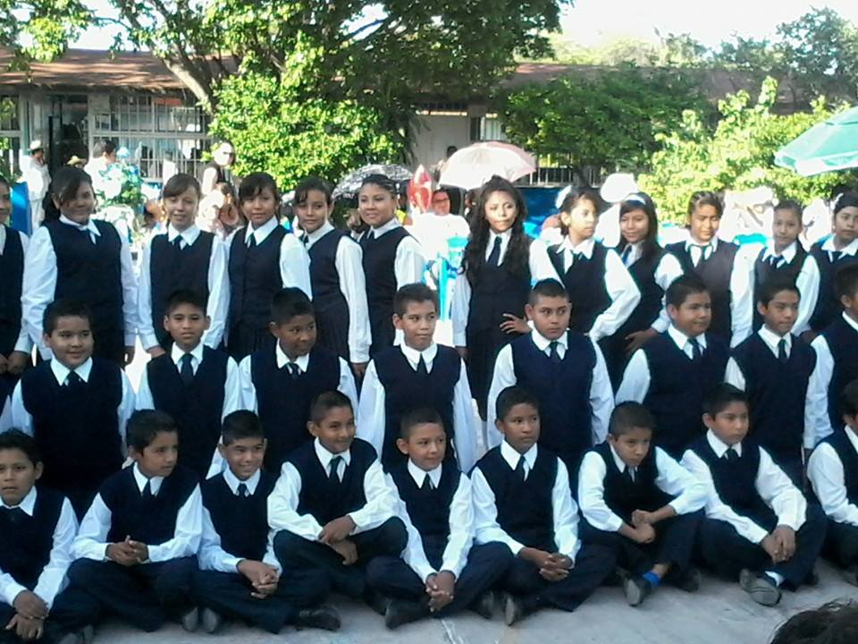

Mi historia en la primaria es aburrida a mi parecer puesto que no habia nada de divertido y apesar de que siempre me destaque por ser de los mas listos en el salon pues no tenia mucha vida social si llegue a tener 3 amigos creo que fue mucho, yo curse 1,2 ,3 y 4 año en la primaria Margarita Maza de Juarez y posteriormente me cambiaron a la escuela Pablo Añorve en la cual culmine mis estudios y ahi tampoco paso nada relevante mas que mi primer amor aunque no se si de verdad cuente como algo por que con la niña con la que andaba solo de vez en cuando nos hablabamos y listo era todo asi que creo que era como una amiga
